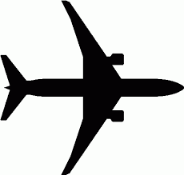
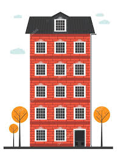
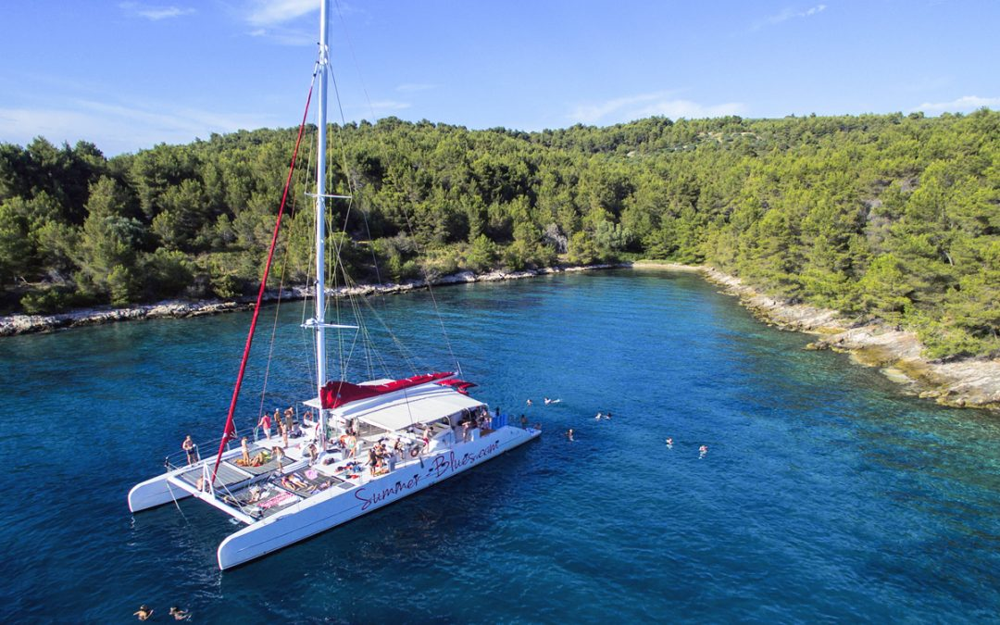
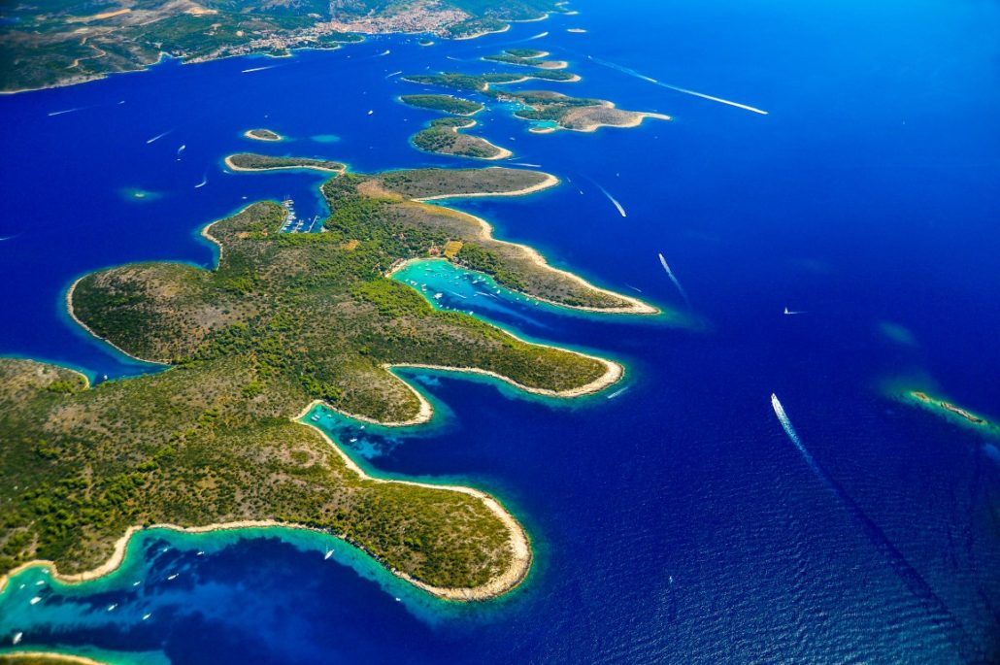
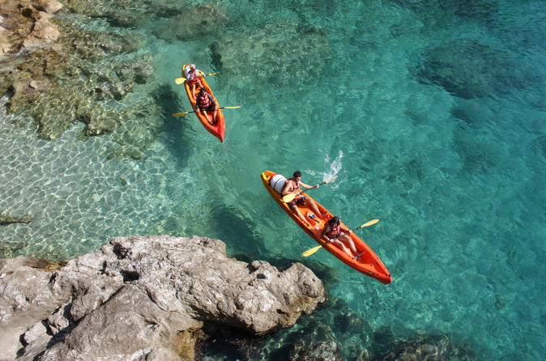
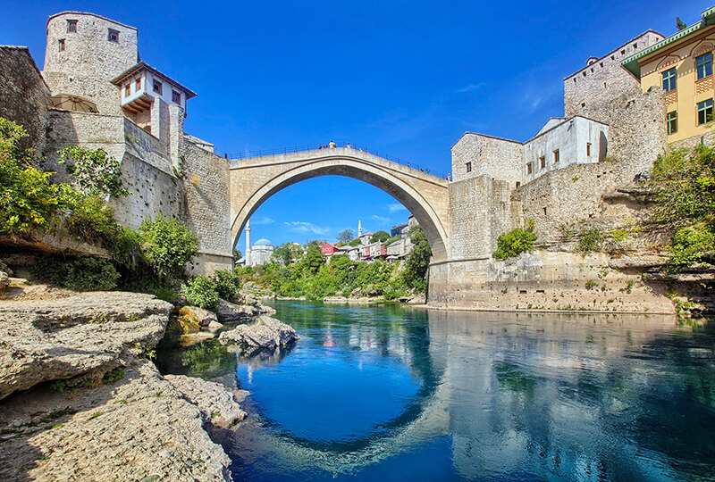

Depart MSP @ 8:25 PM (Condor Flight 2011) 
Arrive at FRA @ 12:15 PM
Depart FRA @ 4:00 PM (Lufthansa Flight 1412) Arrive at SPU @ 5:40 PM
Transportation from Airport to Apartment Sunce
 Apartments Sunce - AirBnB (Check-in @ 12 PM)
Lunch/Dinner Restaurants in Split
Breakfast Restaurants in Split
Plitvice Lakes National Park - Day Trip from Split (7:30 AM - 7:30 PM)
Buy tickets here! ($81+entrance fee)
Other things to see and do!
Brac Island Catamaran Excursion (9:30 AM - 7:30 PM)

Apartments Sunce - AirBnB (Check-out @ 10 AM)
 Hvar - Catamaran Line No. 9602 (3:15 PM - 4:20 PM) Buy Tickets Here!
Hvar - Catamaran Line No. 9602 (3:15 PM - 4:20 PM) Buy Tickets Here!Hvar AirBnB (Check-in @ 2:00 PM)
Things to see and do in Hvar!
Restaurants in Hvar
Pakleni Islands

Hvar AirBnB (Check-out @ 10:00 AM)
Dubrovnik (8:45 AM - 12:00 PM) Buy Tickets Here!Apartment Mansion Center - Booking.com (Check-in @ 3:00 PM)
Restaurants in Dubrovnik
Things to see and do in Dubrovnik!
Sunset Sea Kayak Tour (3hrs)

Mostar Bridge Bosnia (7:00 AM - 6:00 PM)

More things to see!
Apartment Mansion Center - Booking.com (Check-out @ 10:00 AM)
Depart DBV @ 6:30 AM (Croatia Airlines Flight 418) Arrive at FRA @ 8:35 AM
Depart FRA @ 3:30 PM (Condor Flight 2010) Arrive at MSP @ 6:15 PM